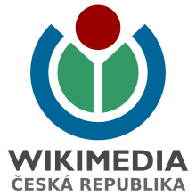
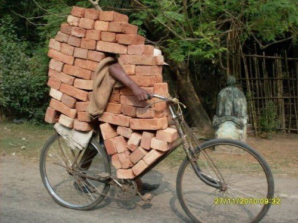

OpenStreetMap
Wikikonference 2013
O JC

- Lesník
- OpenSource GIS vývojář a uživatel - GRASS, OpenLayers, PyWPS, ...
- Člen představenstva Open Source Geospatial Foundation (OSGeo.org)
- Help Service - Remote Sensing, Czech Center for Science and Society, Geosense
- @jachymc, http://les-ejk.cz, http://www.openstreetmap.org/user/jachymc
Co je to OpenStreetMap?
OpenStreetMap je projekt zaměřený na vytváření svobodných geografických dat. U většiny ostatních volně dostupných map je ale užívání technicky a právně omezeno. Proto vznikl tento projekt, aby umožnil lidem volně nakládat s geografickými daty, používat je neobvyklými způsoby a v neposlední řadě, aby byla data dostupná v aktualizované a platné podobě bez dalších nákladů a omezení.
WIKIZACE Geodat

WIKIzace geodat?
- Sbírejte data, nahrajte data z vaší GPS
- Editujte mapu, přidávejte atributy k existujícím objektům
- Sledujte změny na mapě
Sbírejte data
Haiti 2010

Mapping party

Editujte mapu
JOSM

iD editor
Sledujte změny
Používejte data

download.geofabrik.de
$ osm2pgsql file.osm
http://garmin.openstreetmap.cz/
http://wiki.openstreetmap.org/wiki/Android

http://mapbox.com

http://openstreetmap.org

http://prahounakole.cz
To je všechno?
- Co se s tím dá ještě dělat?
- Co můžu dělat pro OSM, aby bylo lepší?
Padouch nebo hrdina, my jsme jedna rodina!
Je toho víc
- Data mining
- Coding
- Donate
Data mining

Zdroj: http://www.miningartifacts.org/Kansas-Mines.html
Data mining
- Katastrální mapy
- Importy z veřejných datových zdrojů
- RUIAN (registr územní identifikace, adres a nemovitostí)
- Automatické získávání dat z webových služeb
- ....
Coding

Zdroj: http://blog.tifwe.org/do-market-economies-exploit-or-liberate/
Coding
- Práce na editorech (JOSM), jejich zásuvných modulech
- Automatické importní skripty
- Automatické opravy
- Vývoj jádra OSM
Donate
Donate
- Help Service - Remote Sensing: import silnic 1 a 2 tříd
- Ústav pro hospodářskou úpravu lesů: WMS Lesů, zpřístupnění leteckých snímků, ...
- Microsoft Bing! Maps, Yahoo Maps, ...
Historie
- 2004 - Steven Coast zaregistroval doménu
- 2005 - MediaWiki, 1000 uživatelů
- 2006 - JOSM 1.0, Map Features, OSM Foundation, Mapnik, povolení používat Yahoo! satelitní mapy
- 2007 - První State of the Map, 5mil silnic a cest, 10 000 uživatelů, improty z velkých datasetů (AND, Tiger)
- 2010 - Povolení používat Bing letecké snímky
- 2012 - Změna lince na ODdl
- 2013 - 1 000 000 registrovaných uživatelů
Organizace
OSM Foundation
- Nezisková organizace registrovaná ve Spojeném království
- Má na starosti servery
- Fund-raising
- Výroční konference State of the map
Licence - The OpenStreetMap Geodata License
- Použití dat je zdarma
- Musí se zobrazit upozornění, že data jsou z OSM
- Veřejně dostupná odvozená díla nechť jsou zpřístupněna pomocí stejné licence
User groups
#coopeartion, #social, #funHOT
The Humanitarian OpenStreetMap Team [H.O.T.] is a new initiative to apply the principles of open source and open data sharing towards humanitarian response and economic development.
HOT

OpenStreetMap - Project Haiti from ItoWorld on Vimeo.
Česká republika
- Aktivní komunita
- Exporty pro GPS Garmin
- Locus
- UHUL, KČT, OpenData movement, ...
Happy Mapping!
jachym.cepicky@gmail.comhttp://les-ejk.cz
@jachymc